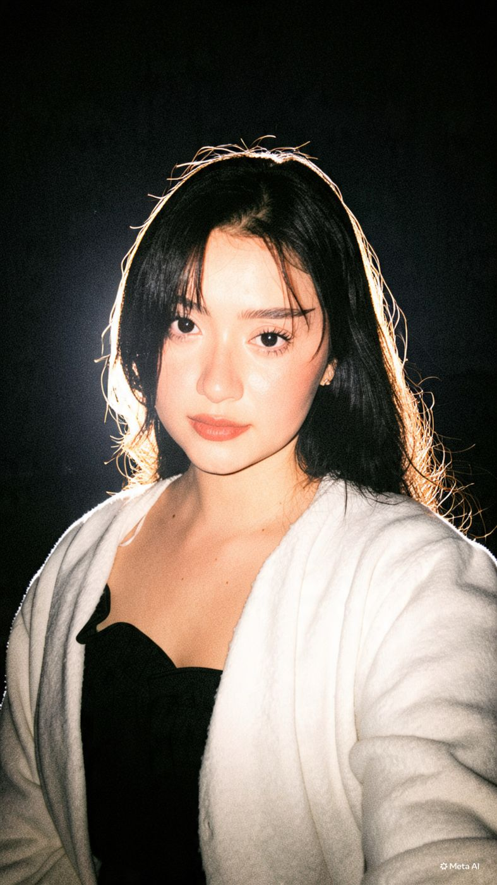

ValentinaBetancur Ramírez
Tengo 24 años, estudio comunicación social y trabajo en enablement y engagement. Este blog es mi rincón para contar quién soy, lo que me gusta y quiénes me acompañan.
- 24 años
- Comunicación social
- Español, inglés y un poco de portugués

¿Por dónde quieres empezar?
- BiografíaQuién soy, cómo soy y qué idiomas hablo.
- UniversidadMi carrera, mi universidad y mi semestre enredado.
- TrabajoMi cargo, mi trayectoria y lo que hago cada día.
- MascotasFélix y Joselito, mis dos gatos.
- Gustos y pasatiemposVideojuegos, lectura, comida, maquillaje, ciencia e historia.
- Mi genteMi familia, mis amigos, mis primas y mis compañeros.
- Viajes soñadosLos países que quiero conocer.